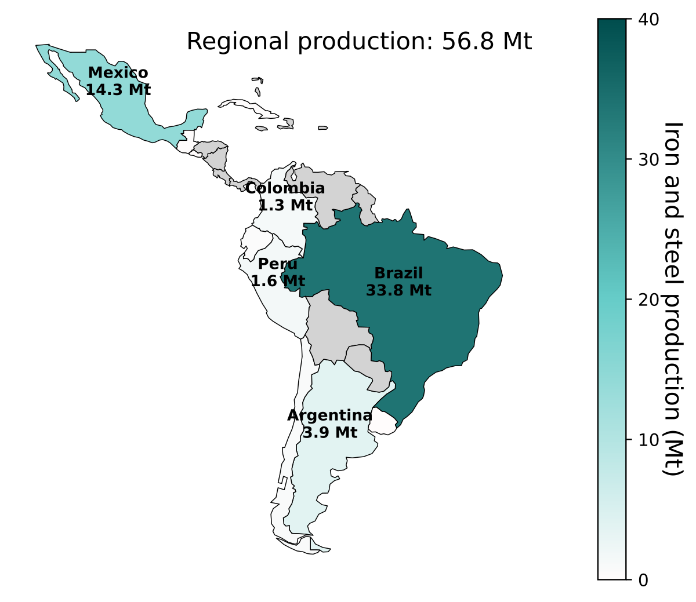

Strategies, barriers, and policies for the decarbonization of the iron and steel industry in Latin America
Energy Research & Social Science

Abstract
Decarbonizing iron and steel production in emerging industrial regions depends not only on the availability of low-carbon technologies but also on institutional, market, and governance conditions that enable their deployment. Despite increasing global attention to industrial decarbonization, Latin America remains underexamined, even as its steel sector faces mounting pressures from trade exposure, infrastructure constraints, and uneven policy capacity. This article develops a comparative sociotechnical assessment of decarbonization strategies, implementation barriers, and policy instruments shaping the transition to low-carbon steel production across the region’s major producers. The study combines a benchmarking analysis of production structures, emissions performance, and energy configurations with a systematic review of scientific and gray literature. This approach situates technological pathways within the political economy contexts that condition their feasibility. The findings indicate that while a diverse portfolio of mitigation options exists (including electrification, expansion of scrap-based production, alternative reducing agents, and carbon management technologies), deployment is constrained by fragmented regulatory environments, limited Monitoring, Reporting and Verification capacity, weak policy credibility, and territorial asymmetries that affect investment incentives and workforce transitions. The study further shows that the effectiveness of policy instruments depends less on formal adoption than on the institutional conditions under which they operate. By demonstrating how sociotechnical factors mediate the translation of global decarbonization roadmaps into regionally viable transition pathways, this comparative case study contributes key evidence on the challenges of decarbonizing steel production in emerging industrial economies.
Acknowledgements
This research was supported by the Colombian Ministry of Sciences, Technology, and Innovation through the National Doctoral Program 933-2023.
Citation
@article{a._camargo-bertel2026,
author = {A. Camargo-Bertel, A. and Alvarez-Navas, J. and
Mercado-Barrera, J. and Fronk, B. and González-Quiroga, A. and
Pupo-Roncallo, O.},
title = {Strategies, Barriers, and Policies for the Decarbonization of
the Iron and Steel Industry in {Latin} {America}},
journal = {Energy Research \& Social Science},
pages = {104711},
date = {2026-04-23},
url = {https://doi.org/10.1016/j.erss.2026.104711},
doi = {10.1016/j.erss.2026.104711},
langid = {en}
}